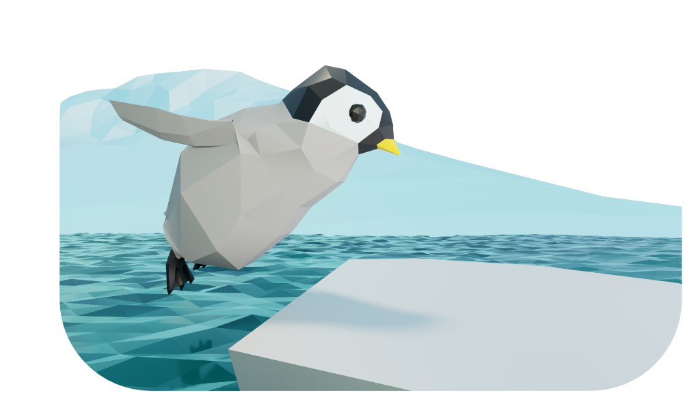

About The Game

Flippy is a narrative puzzle game about a young penguin who is trying to find their way through the ice and water of the antarctic. Your task is to help Flippy manipulate and navigate this harsh environment whilst keeping him clear of predators.
Throughout the game, you will solve a series of puzzles to progress and to unravel more of Flippy's story. This tale is deeply personal to the game designer and touches on themes of independence, loss and positivity despite facing challenges.
Music
 The music for Flippy was composed by the game designer. Inspiration was drawn from a range of contemporary piano and chamber music, alongside modern Scandinavian composers in those genres who intergrate electronic soundscapes into their music.
The music for Flippy was composed by the game designer. Inspiration was drawn from a range of contemporary piano and chamber music, alongside modern Scandinavian composers in those genres who intergrate electronic soundscapes into their music.
The soundtrack can be listened to on Soundcloud link below. As we journey towards the release of the game, more pieces will become available.


{kind=link}
{kind=link}